💰 Как стать востребованным тренером по ресницам и зарабатывать на курсах 200 000 ₽ в месяц
Сегодня я зарабатываю от 200 000 ₽ в месяц на преподавании наращивания ресниц. Это базовые курсы для новичков, повышение квалификации для действующих мастеров и обучение LED-наращиванию — офлайн и онлайн. Ко мне записываются на 1–2 месяца вперёд, а я выпустила уже более 100 учениц.
И самое интересное: почти все они находят меня без Instagram и без Reels. Мои главные источники — ВКонтакте, Авито и карты.
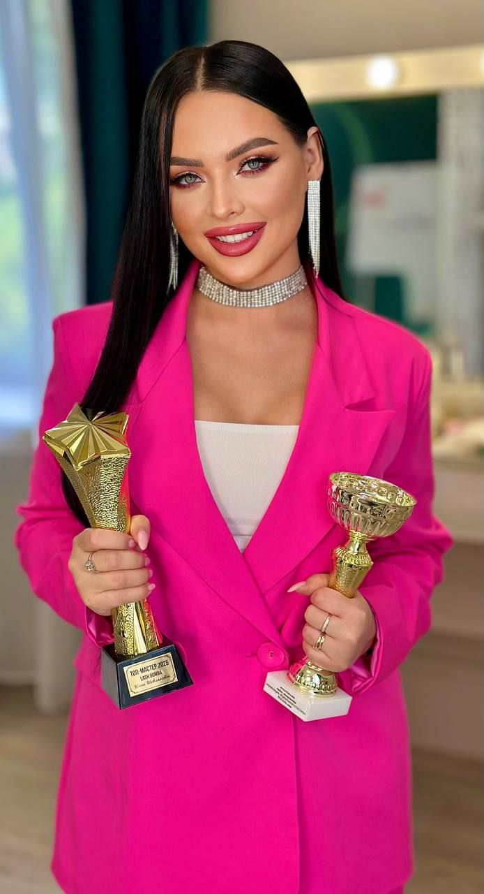
ТОП-мастер 2025, LASH BOMBA
Меня зовут Александра Лисовская. 9 лет в ресницах, 6 — тренер. Мастер PREMIUM-наращивания, эксперт в мире LED, партнёр лицензированной школы, 26-кратный призёр и судья международных чемпионатов, участник конференций, своя школа-студия в центре города.
26-кратный призёр и судья международных чемпионатов
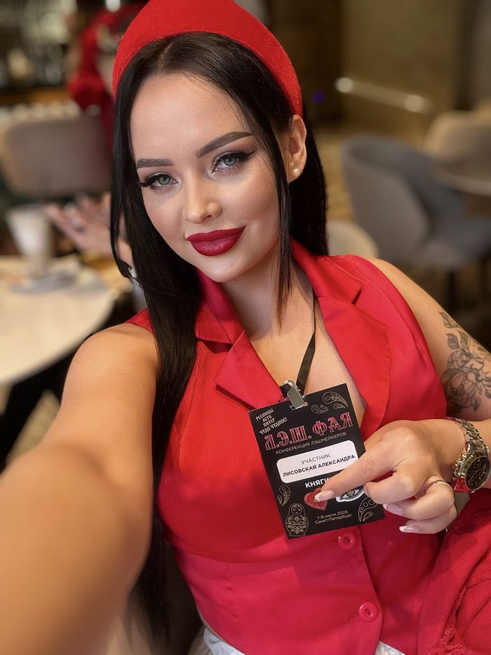
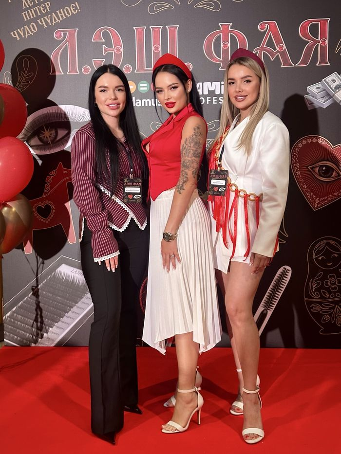
Участник конференций — ЛэшФая 2026
А ведь когда-то мои курсы не покупал никто.
Как всё начиналось
Киров, мне 19 лет, я студентка второго курса. В профессию я пришла, потому что хотелось иметь дополнительный доход и делать девушек красивыми. Мой первый курс по классике стоил 4 000 ₽, а начинала я с прайса 400 рублей.
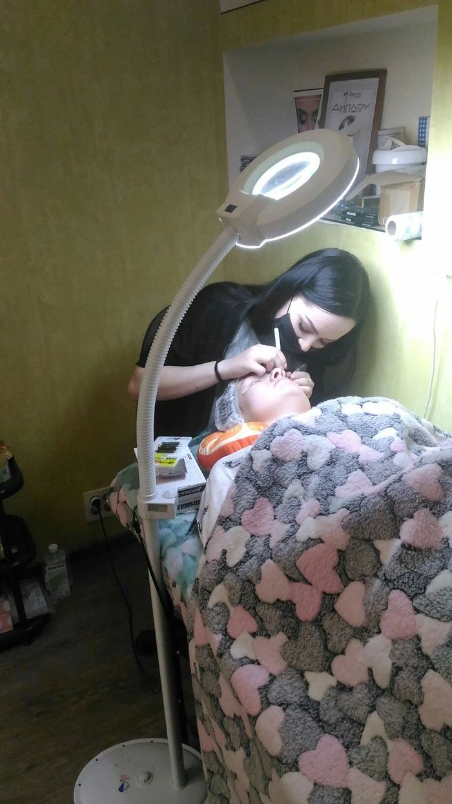
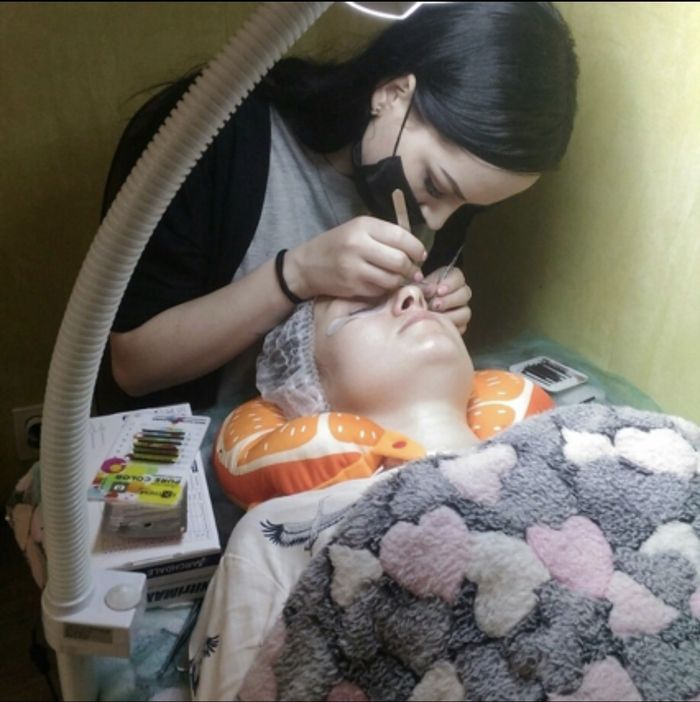
С этого всё начиналось
Уже через полгода активной работы клиентки начали просить меня их научить. Я подумала: «Ну а что, работы у меня хорошие, база полная — значит, и учить смогу». На тот момент я не проходила никаких тренерских курсов.
Свой первый базовый курс я поставила за 5 000 ₽ и обучила клиентку по её просьбе. Всё это было «на коленке», без методички и выстроенной системы. Я нигде это не афишировала и не выкладывала, поэтому люди даже не знали, что я обучаю.
Но, несмотря на это, просьбы клиенток не прекращались. Видя мои работы, они хотели узнать технику и разгадать тот самый секрет, почему у меня полная запись.
Так я начала преподавать примерно в 2020 году. И следующие пять лет двигалась буквально по чуть-чуть: один курс раз в три месяца, иногда раз в пять. Без системы, без продвижения, без понимания, как сделать так, чтобы ученицы приходили сами.
Я так уставала от каждого такого обучения, что мне не нравилось преподавать, и я не раз хотела бросить это дело.
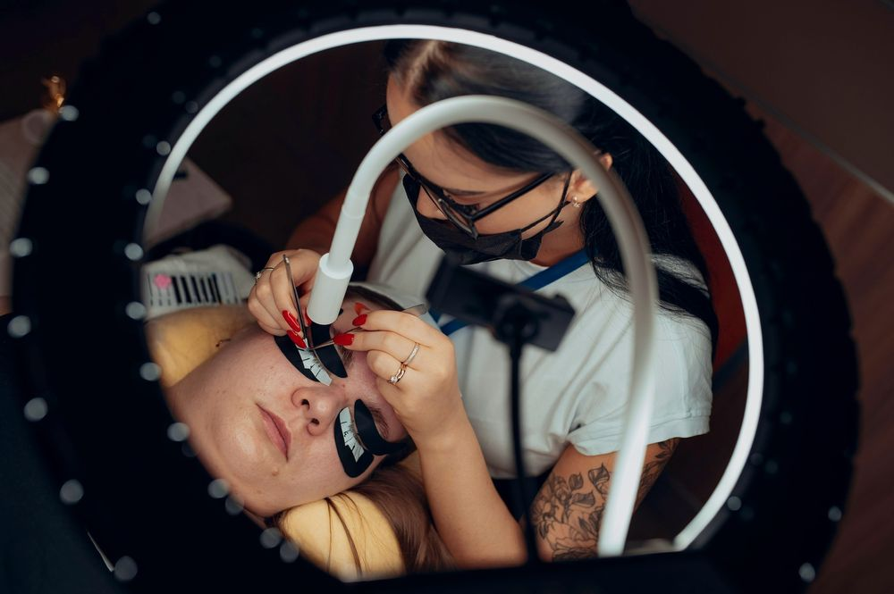
А потом мне надоело работать на потоке с клиентами. Хотелось более высокого статуса, чем просто мастер, который работает руками. И для меня было важно преподавать официально и «по правилам».
И два года назад я просто решилась. Пошла учиться на тренера и прошла сразу несколько тренерских обучений — за 100, 70 и 5 тысяч. Помню, первый курс я взяла в рассрочку на год, потому что до этого не покупала настолько дорогие обучения. А закрыла её за два месяца — ещё во время курса, с помощью преподавания.
На курсах я поняла простую вещь:
Ученица покупает не программу обучения. Она покупает уверенность, что после обучения начнёт зарабатывать.
И что дело не в том, сколько у тебя кубков, а в трёх вещах: какой у тебя продукт, как ты себя показываешь и как к тебе приходят люди.
Я создала полностью новую, современную концепцию обучения, переупаковала себя как тренера, перестала сразу продавать курс и стала предлагать сначала попробовать профессию. И выстроила систему, в которой ученицы приходят ко мне каждую неделю — даже когда Instagram не работает.
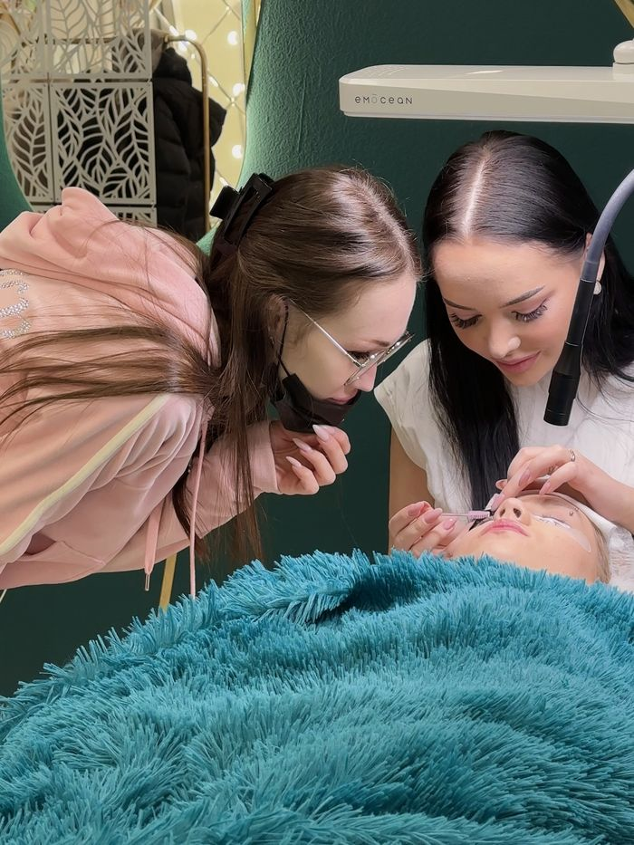
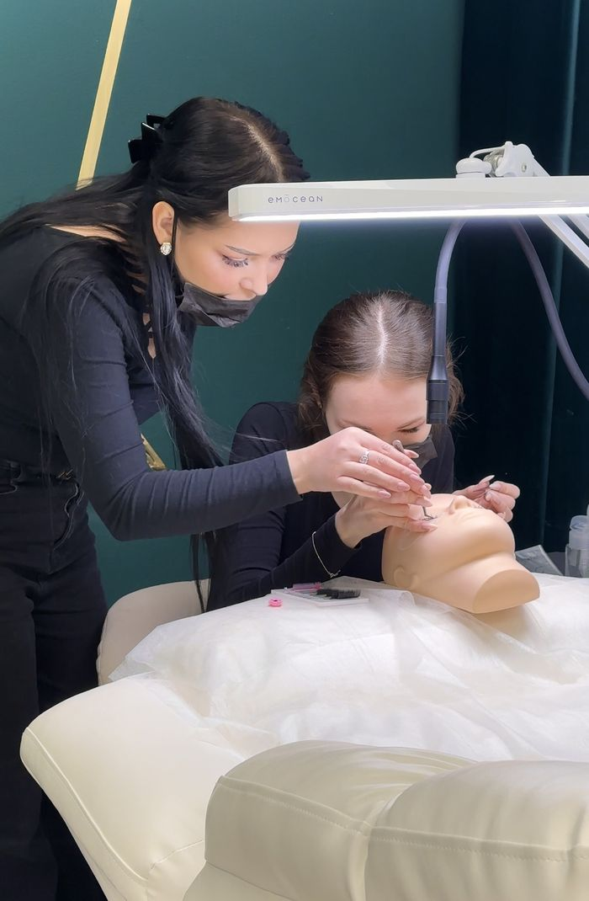
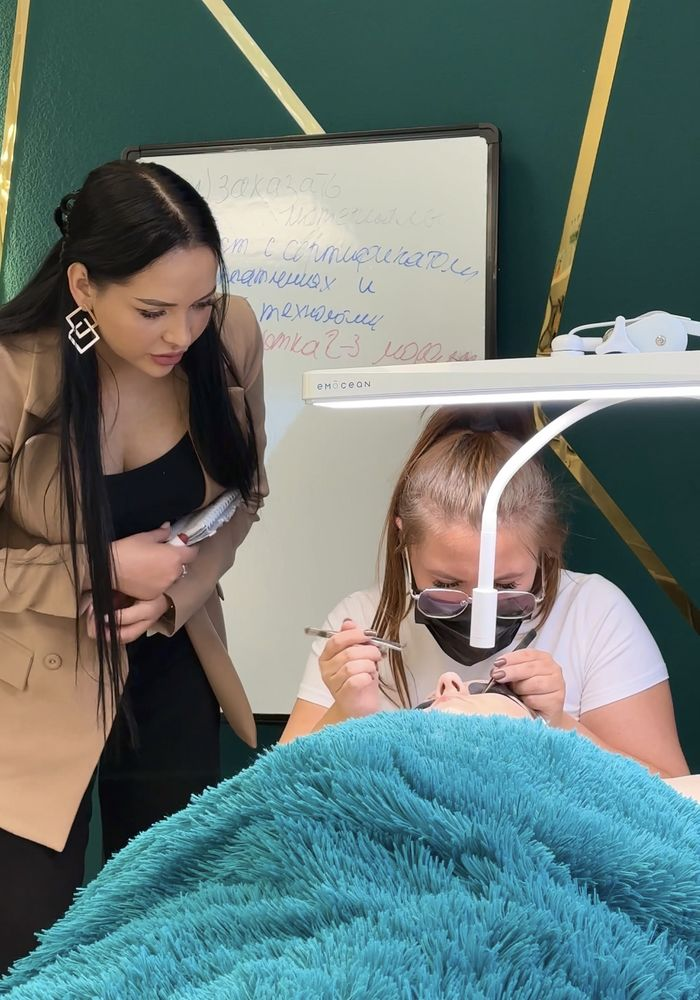
Ученица наращивает сама — я направляю
Через два месяца я вышла на 1–2 ученицы в месяц и 50 000 ₽ на обучении. А сейчас, спустя два года, мои результаты в преподавании — 200 тысяч в месяц и 5–10 учениц, офлайн и онлайн. И я — один из топ-преподавателей своего города.
Пять лет я преподавала «как получится». И всего за два года с системой обогнала всё, что сделала за эти пять.
И знаешь, о чём я жалею больше всего? Не о деньгах, которые потратила на обучение. А о том, что не начала раньше. Если бы я применила свою стратегию ещё тогда, в 2020-м, я бы уже давно зарабатывала эти деньги — и не потеряла бы пять лет.
Я вижу это почти у каждой второй девочки, которая приходит ко мне. Ты давно хочешь преподавать. Тебя уже просят научить. Но ты ждёшь: «ещё подучусь», «ещё наберусь опыта», «вот будет больше кубков — тогда». И годы уходят так же, как ушли мои пять.
Не повторяй мою ошибку. Время, которое ты тратишь на сомнения, — это деньги, которые ты не заработала.
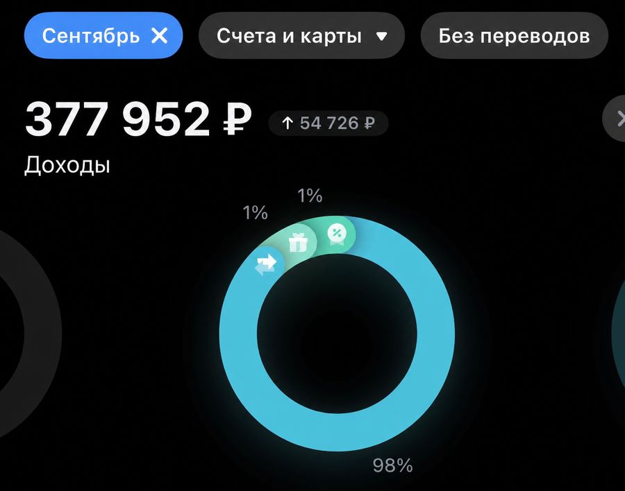
Мой доход за сентябрь
И сегодня я расскажу, как это повторить.
Ты отличный мастер. Но твои курсы не покупают.
Знакомая ситуация?
У тебя хорошие работы, есть клиентки, и к тебе уже не раз приходили с вопросом: «А ты не обучаешь?» Ты запускаешь свой курс — и оказывается, что продать обучение гораздо сложнее, чем записать клиентку на ресницы.
Набор идёт тяжело. Девушка пишет: «Сколько стоит обучение?» Ты называешь цену, отправляешь программу — и в ответ «спасибо, я подумаю». Или просто тишина. Одна ученица в месяц, иногда ни одной. Ты снижаешь цену, а лучше не становится. Ты выкладываешь сторис и Reels, а охваты падают. А когда ученица всё-таки приходит, ты весь день стоишь над каждой её ресничкой — и после курса просто молча лежишь на полу от усталости.
И самое обидное: ты видишь тренеров, у которых меньше опыта, нет кубков, а работы не сильнее твоих, — но у них полные группы и чек в два раза выше.
Ты думаешь:
«У них просто имя. Они раньше начали. Им повезло».
Нет. Дело совсем не в этом.
Три ошибки, из-за которых мастер не может продать свой курс
Я сама прошла через каждую из них. И вижу их почти у всех мастеров, которые приходят ко мне учиться на тренера.
Ты впихиваешь в курс всё на свете — и ставишь цену ниже, чем у других
Кажется, что чем больше информации, тем «качественнее» курс. Классика, объёмы, эффекты, продвижение, фотографии — всё за один день.
Но ученица при перегрузе забирает от силы 10% знаний. А при дозированной подаче без расфокуса — 30–40%. В итоге у неё ничего не получается, она не начинает работать, и сарафана от учениц нет.
И к этому — низкая цена «чтобы точно купили». Дешёвый курс не вызывает доверия, а тебя выматывает.
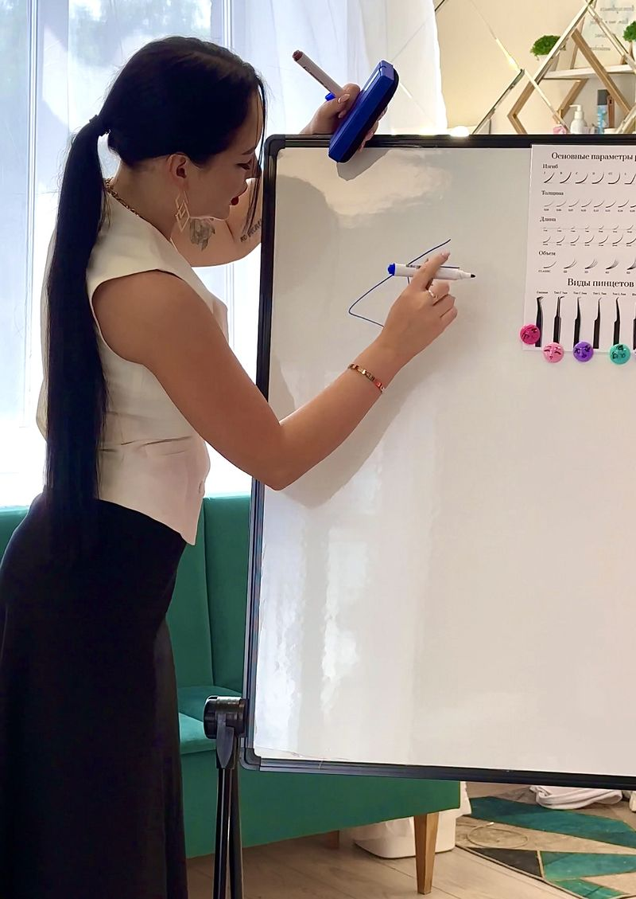
Даю теорию дозированно — так ученица забирает в разы больше
Ты продаёшь себя как мастера, а не как тренера
В профиле — только глаза крупным планом. Ни слова о том, чему ты учишь, кто у тебя учился и что эти ученицы зарабатывают потом.
Если ты выглядишь как мастер, тебе и платят как мастеру.
Ученица выбирает не того, кто лучше всех наращивает. Она выбирает того, кому верит: что после курса у неё всё получится.
Ты ищешь учениц только в Instagram
Охваты падают, Reels не залетают, правила меняются каждый месяц. А ты продолжаешь снимать по пять сторис в день и ждать заявок.
Главная ошибка — строить бизнес на одной площадке. Ученицы никуда не исчезли. Они просто ищут обучение в других местах: во ВКонтакте, на Авито, в Яндексе, на картах.
Что реально работает: система из трёх шагов
Это система, по которой я сама вышла на 200 000 ₽ в месяц на курсах по наращиванию ресниц. И она работает в любом городе.
Шаг первый: сделай сильный курс
Всё начинается с продукта. Если курс не даёт результата, никакая реклама не спасёт: ученицы не начнут работать, не оставят отзывов и не порекомендуют тебя.
Изучи рынок своего города. Цены, программы, что входит, кто преподаёт и какие у них регалии. И главное — кто твоя ученица? Чего она боится? Зачем она идёт учиться? Как ей сделать классно?
База — это база. Не пытайся в первый день дать всё сразу. Классика, постановка руки, моделирование, изгибы, гигиена, первые клиенты. А объёмы, эффекты, портфолио и продвижение — это следующие ступени, которые изучаются дальше, шаг за шагом.
Не только база. Когда у тебя выстроен сильный базовый курс, дальше появляются курсы для тех, кто уже работает: повышение квалификации, новые техники, LED-наращивание. Твои выпускницы и действующие мастера приходят к тебе снова — и одна ученица покупает у тебя не один раз. Именно так складывается доход тренера, а не на одном базовом курсе.
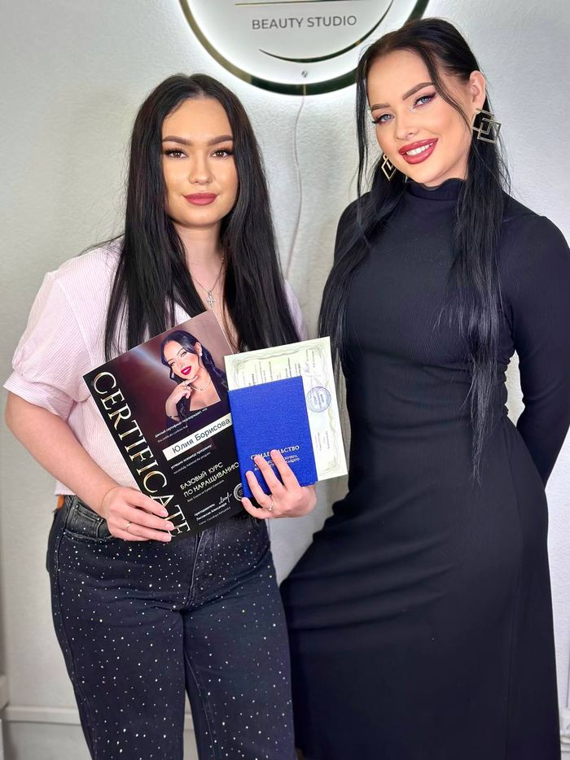
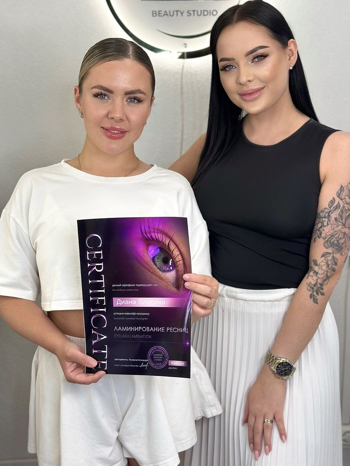
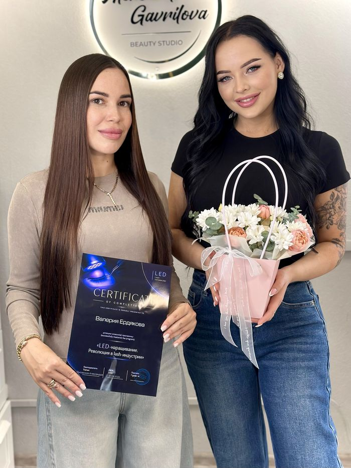
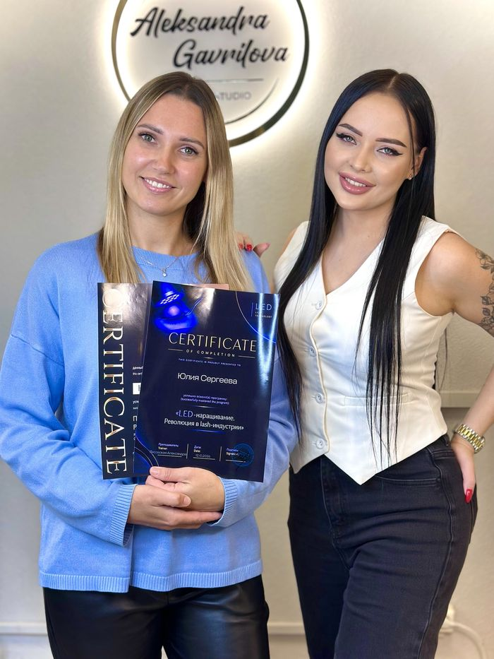
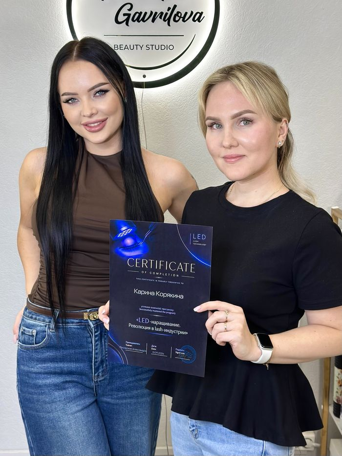
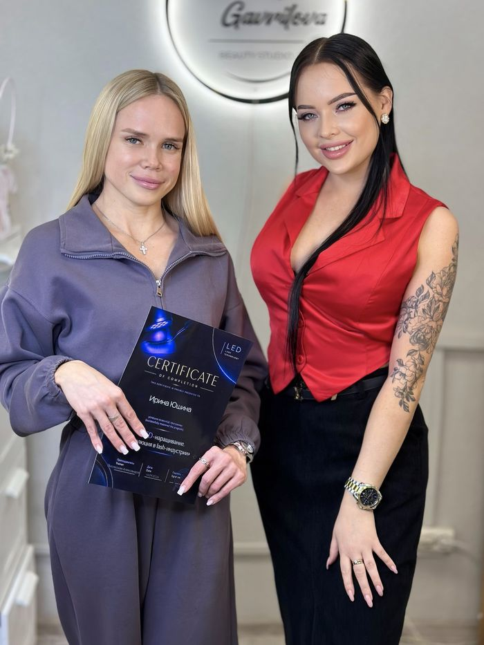
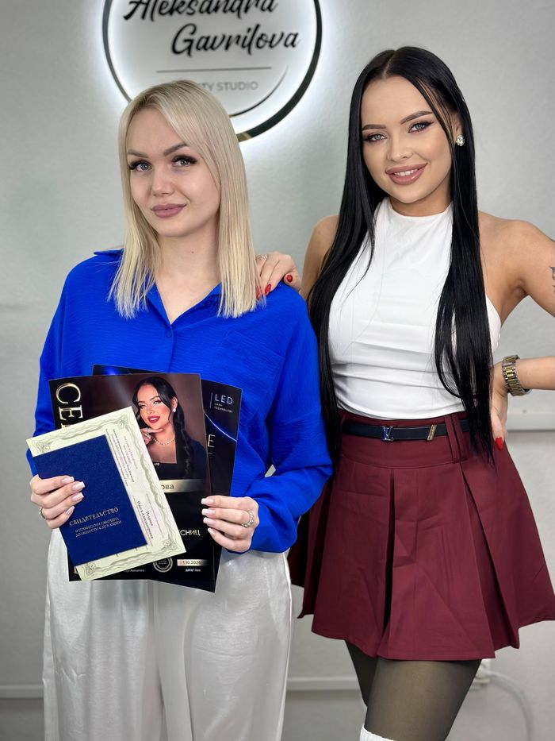
Мои ученицы: базовый курс, LED, ламинирование
Формат, который не выматывает. Например, 3 дня основного обучения + 2 дня стажировок. Для ученицы это 5 дней — звучит серьёзно и по факту полезно. Но это не пять полных рабочих дней с утра до вечера. Встречи идут по половине дня: условно 3–4 часа теории и около 5 часов практики. А между встречами ученица делает много домашних заданий. Ей — больше практики и результата, тебе — силы и время на жизнь.
Жёсткий тайминг. Модель — строго 3–4 часа по таймеру. Ученица наращивает сама, а ты не спасаешь и не доделываешь за неё. Потом — разбор каждой работы и обратная связь по фото.
Ответственность — на ученице. Ты отвечаешь за курс, а она — за свой результат. Ты даёшь свои 50%, она — свои 50%. Если она даёт ноль, результат будет ноль, сколько бы ты ни старалась.
Детали, которые создают WOW. Подарки и бонусы: дай ученицам больше, чем они ожидают. В конце — вручение сертификата и документов, отзывы на камеру, шампанское, торт и «посвящение в лэшмейкеры».
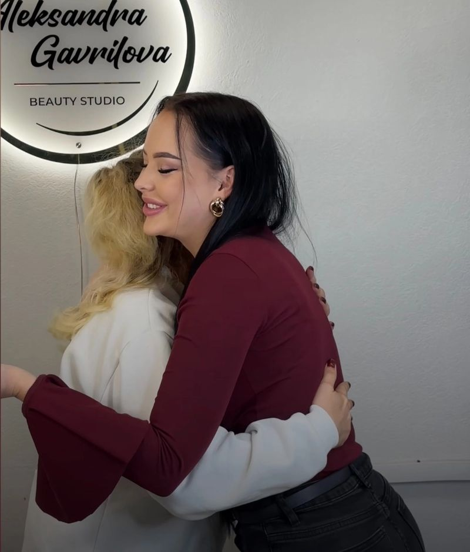
В последний день я уже не строгий тренер, а наставник, который разбирает ошибки
Правильная цена. Одна учебная встреча не должна стоить меньше, чем день работы с клиентами. Если ресницы у тебя стоят 2 500 ₽ и за день ты принимаешь 3 клиенток — это 7 500 ₽. Значит, день обучения не может стоить меньше. Иначе обучать просто нет смысла.
Самый дорогой курс в городе не обязательно у чемпиона. Он у того, кто лучше всех понимает, чего хочет ученица.
Альтернатива — ещё проще. Теорию можно вынести в запись, а практику сократить до 4–5 часов. Ученица заранее, минимум 5 дней, делает специальные упражнения, которые формируют мышечную память, и на первой же практике наращивает сама. Тебе — меньше часов на площадке, ей — быстрый результат.
Мой стандартный тариф базового курса — 5 дней. Мои фишки — теория онлайн, системные домашние задания и максимально упрощённая работа с личными лайфхаками.
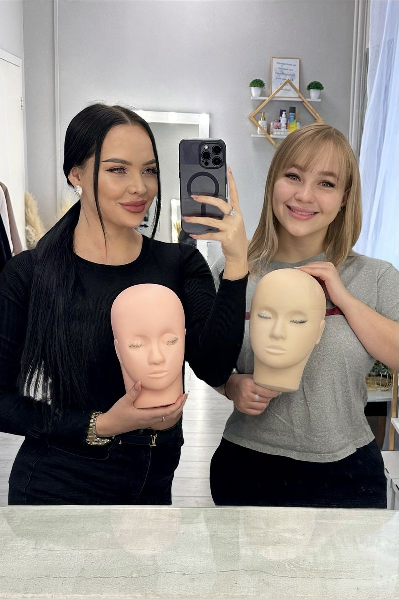
Тренировка на манекенах перед первой практикой
Шаг второй: упакуй себя как тренера — везде
Важный момент: упаковка тренера одинаково работает в любой соцсети — в Instagram, во ВКонтакте, в Telegram. Но я делаю главный упор на ВКонтакте и на площадки, где тебя ищут без всяких соцсетей.
Позиционирование: почему именно ты. Найди свою суперсилу. Чем твой курс отличается от других? Может быть, ученицы у тебя наращивают сами уже на первой практике. Может, ты помогаешь найти первых клиенток. Может, даёшь технику, которой в городе не учит никто. Сформулируй это одной фразой: что ты даёшь, кому, за сколько времени и какой результат получит ученица.
Образ эксперта. Ученица должна видеть не только твои работы, но и тебя как преподавателя: ты у доски, ты с ученицами, ты на конференциях, выпускные группы, сертификаты.
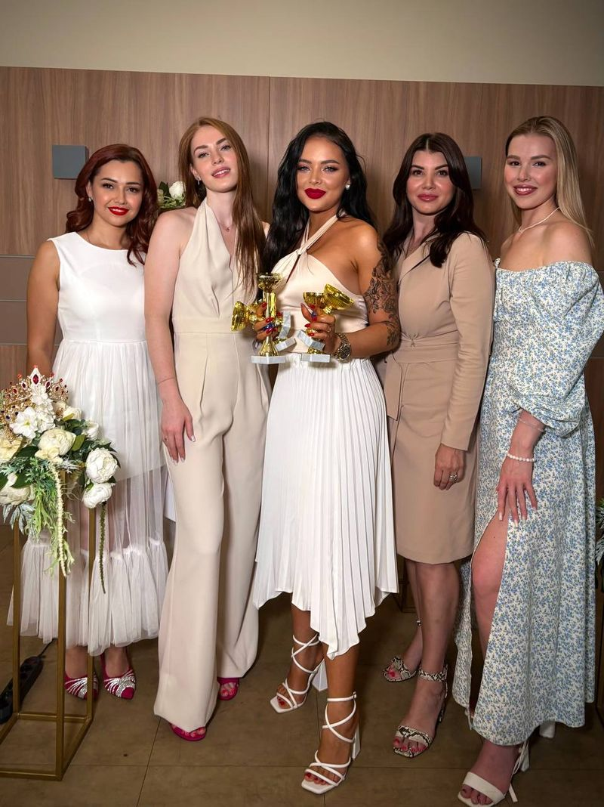
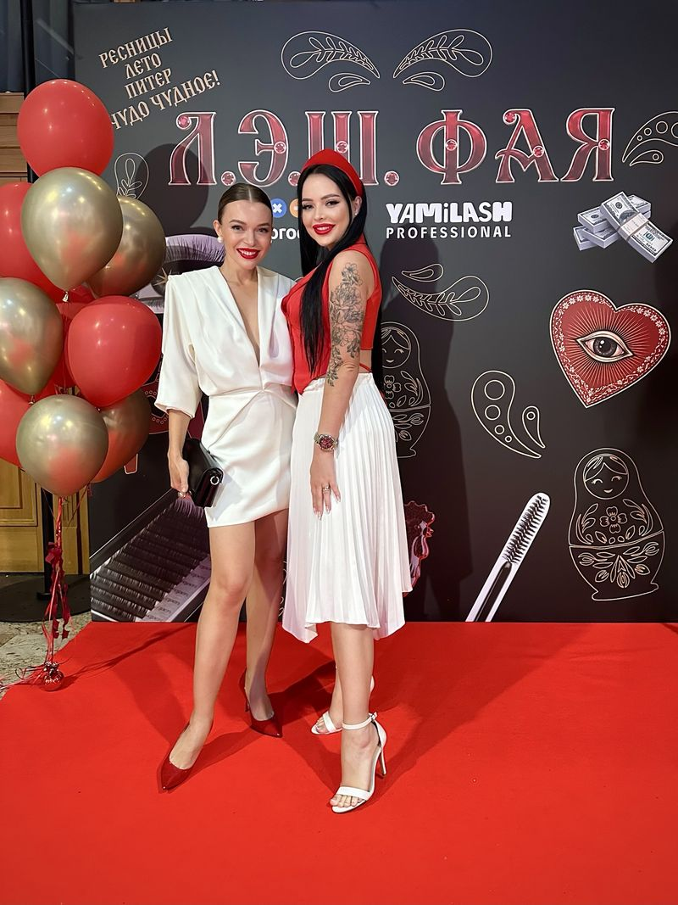
Конференции и чемпионаты — тоже часть образа тренера
Группа ВКонтакте как готовая школа. Понятное название: «Обучение наращиванию ресниц Киров». Обложка с твоим предложением. Меню: о курсе, программа, отзывы, результаты учениц, запись на пробный урок. Статьи с кейсами учениц. Товары — твои курсы с ценами. И всё это индексируется в Яндексе: тебя находят даже через обычный поиск.
Раздел «Как выбрать курс по наращиванию». Это воронка внутри страницы. Ты не продаёшь, а объясняешь: сколько моделей должно быть на курсе, кто должен наращивать — ты или преподаватель, что должно входить в базу, почему важна поддержка после обучения. И каждый пункт — на своём примере. Будущая ученица начинает оценивать всех тренеров по твоим критериям — и выбирает тебя.
Прогревы и инфоповоды. Первая клиентка ученицы. Ученица, которая вышла на первый доход. Твоё выступление на конференции. Новый поток. Каждый инфоповод — это повод рассказать, почему у тебя учатся и что ученицы получают.
Школа на картах. Яндекс Карты, 2ГИС, Авито — оформи себя как школу: фото учебного класса, учениц, выпускных, программа, отзывы, ключевые слова «обучение наращиванию ресниц Киров». Когда девушка ищет «курсы наращивания ресниц рядом», она должна найти тебя.
Моя упаковка максимально простая и понятная и мягко ведёт ученицу к записи на курс.
Шаг третий: выстрой воронку и трафик — без Instagram
Побеждает не тот, кто снимает лучшие Reels, а тот, кого можно найти везде.
ВКонтакте — основа. Там больше 90 миллионов пользователей и огромная аудитория женщин 18–50 лет. И у ВКонтакте есть то, чего нет в Instagram, — понятный таргет.
Таргет ВК под обучение — три настройки.
• По подписчикам групп конкурентов: школы наращивания, другие тренеры, магазины материалов, бьюти-сообщества. Если девушка подписана на них — она уже интересуется обучением.
• По поисковым запросам: «обучение наращиванию ресниц», «курсы лэшмейкера в Кирове», «как стать мастером по ресницам».
• По локации: девушки, которые живут рядом с твоей школой.
И рекламируй не «набор на курс» и не фото ресниц, а понятный первый шаг — тест-драйв профессии. О нём — чуть ниже, это сердце всей воронки.
Авито — недооценённый источник учениц. Не одно объявление «обучаю наращиванию», а продуманная упаковка: фото тренера и эффектных работ, цепляющий заголовок, ключевые слова, гео-метки, продающее описание, отзывы и призыв. Сделать это нужно один раз — и объявления начинают приводить заявки стабильно.
Яндекс Директ. Ловит тех, кто прямо сейчас ищет «курсы наращивания ресниц в Кирове». Одна услуга, одно предложение, одна страница — и обязательно считай цифры.
Тест-драйв профессии — первый шаг, на который легко решиться.
Вот что я поняла, когда разбиралась, почему у меня не покупают. Дело почти никогда не в цене.
Представь девушку, которая давно присматривается к профессии. У неё куча сомнений: «А вдруг у меня не получится? А если я не увижу натуральные ресницы? А если мне не понравится работать пинцетами? А если я заплачу, а потом пойму, что это не моё?»
И в этот момент ты рассказываешь ей про программу, количество дней и сертификат. Всё это важно. Но ты рассказываешь, что она получит, а она до сих пор не знает главного — получится ли у неё. Этот опыт словами не передать.
Поэтому вместо «купи мой курс» я предлагаю первый шаг — тест-драйв профессии. Короткую встречу, на которой человек пробует себя в наращивании до того, как решиться на полноценное обучение. Но просто дать пинцеты и сказать «попробуй» недостаточно — если новичок сразу упрётся в сложности, он уйдёт с мыслью «это не для меня». Поэтому тест-драйв строится из трёх частей.
1. Влюбить в процесс. Начинаем с самого простого: знакомство с инструментами, первые движения, первые реснички на манекене. Задача — чтобы человек сам почувствовал: «О, у меня получается! А ведь это правда интересно».
2. Влюбить в перспективу. Показываем, куда можно прийти с этой профессией: первые клиентки, свой график, рост дохода, свой кабинет. Честно, без обещаний лёгких денег. И обучение перестаёт быть «дорогим курсом» — оно становится первым шагом к будущему, которое человеку интересно.
3. Предложить следующий шаг. Не «купи курс за столько-то», а «продолжи то, что ты уже начала». И стоимость тест-драйва засчитывается в оплату основного обучения — человек не воспринимает его как отдельную трату.
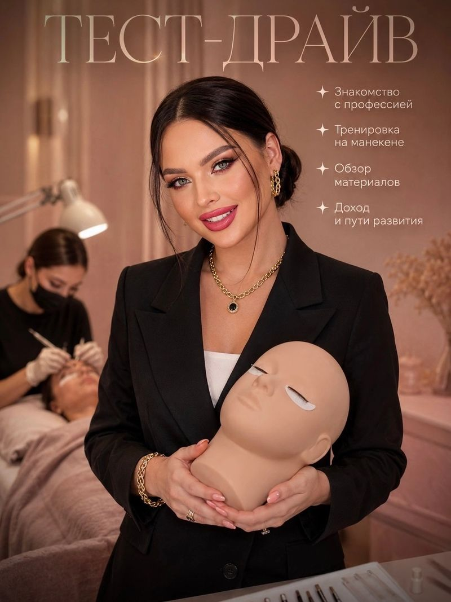
Мой тест-драйв профессии
Главное правило — тест-драйв не для того, чтобы уговорить любой ценой. Если человек понял, что профессия не его, — это тоже честный результат: он не потратил деньги зря, а ты — время.
И тест-драйв — это ещё и лучший повод обратиться к тебе. «Набираю на курс за 20 000 ₽» — человек видит цену, сомневается и откладывает. «Попробуй профессию до того, как платить за обучение» — совсем другой разговор. Поэтому именно тест-драйв я ставлю в рекламу ВКонтакте, в объявления на Авито и в описание на картах.
У меня 9 из 10 человек после тест-драйва покупают базовый курс.
Личная консультация. Для тех, кто не может прийти на тест-драйв, — короткий созвон. Ученица гораздо чаще покупает после живого разговора, чем после переписки. Задай вопросы: зачем ты хочешь учиться, чего боишься, какой доход хочешь. Покажи, как курс решает именно её задачу. И сразу предложи выбрать поток.
Быстрая обработка заявок. Ответила через 3 часа — ученица уже пишет другому тренеру. Ответь быстро, ответь на вопрос и сразу пригласи на тест-драйв или созвон.
И по необходимости: рассылки по тем, кто интересовался обучением, спонсорство бьюти-мероприятий, свои мини-мероприятия — дни открытых дверей для будущих учениц, групповые тест-драйвы, мастер-классы.
Математика. 100 человек увидели рекламу → 10 оставили заявку → 5 пришли на тест-драйв или созвон → 4 купили курс. При среднем чеке 30 000 ₽ это 120 000 ₽ с каждой сотни. Тебе не нужны миллионы просмотров. Тебе нужна система.
Мои источники учениц: ВКонтакте — 50%, Авито — 20%, карты — 20%, сарафан — 10%.
Что происходит, когда система работает
Ты перестаёшь зависеть от охватов в Instagram. Instagram может не работать неделю — а заявки всё равно приходят.
Ты не выгораешь на каждом потоке. Курс проходит по чёткому таймингу, ученицы наращивают сами, а у тебя остаются силы и время на жизнь.
Ученицы начинают зарабатывать — и приводят к тебе подруг. А выпускницы возвращаются на повышение квалификации.
А обучение начинает приносить больше, чем работа руками.
Это не история про везение и не про кубки. Это история про систему, которую можно повторить.
Я — сама свой главный кейс. Два года назад я поставила цель стать топ-тренером города, и у меня это получилось! Я выстроила свою систему, которая работает в любом городе.
со мной один на один
Мы разберём именно твою ситуацию и закроем все нюансы по трём блокам:
Это не общие советы, а пошаговая стратегия: как выйти на 200 000 ₽ в месяц на преподавании.
Стоимость личного урока — 3 000 ₽. Но сейчас я провожу исследование будущих преподавателей: мне важно понять, с чем вы сталкиваетесь, чего боитесь и что мешает вам начать обучать. Поэтому для самых смелых — личный урок бесплатно, если:
• в течение 24 часов после прочтения статьи напишешь мне в личные сообщения ВКонтакте ключевое слово «ЛИЧНЫЙ УРОК»;
• ответишь на несколько вопросов для моего исследования.
9 лет в профессии. Более сотни учениц. 200 000 ₽ в месяц на преподавании.
Записаться на личный урок
Нажми и напиши «ЛИЧНЫЙ УРОК» · через 24 часа после прочтения предложение станет недействительным